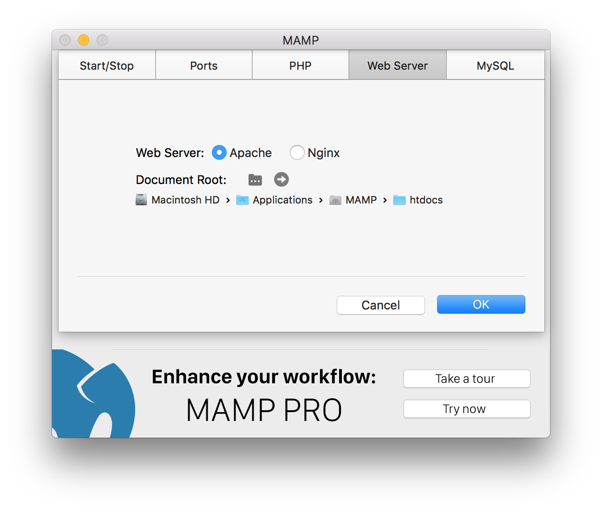
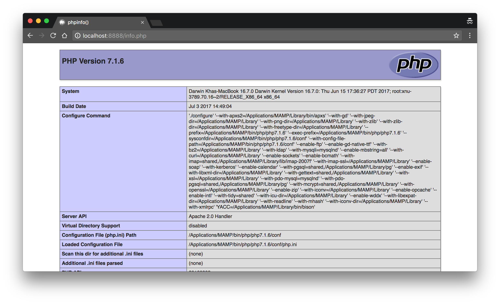
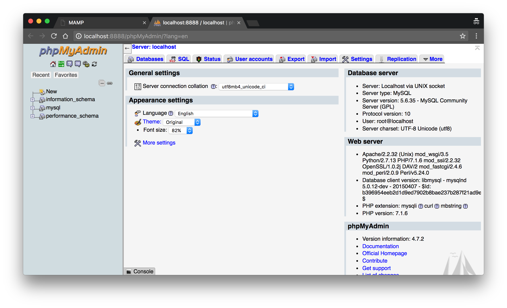

Giảng viên: Đỗ Nguyên Kha
Học kỳ 1/2017-2018 @ FIT-HCMUS
Cài đặt từng thành phần PHP, MySQL/MariaDB, Apache khá phức tạp do đó các nhà phát triển đã tạo ra những bộ cài đặt bao gồm các thành phần: Windows/Linux/MacOS hoặc X (cross-platform), Apache, MySQL/MariaDB và PHP/PHPMyAdmin
Các gói cài đặt phổ biến: WAMP, XAMPP, MAMP (Pro)...
Để biết đường dẫn đến thư mục này kiểm tra trong cài đặt của Web Server.
Tạo tập tin info.php với nội dung:
<?php
phpinfo();
?>
Truy cập vào URL http://localhost/info.php hoặc http://localhost:8888/info.php hoặc thay 8888 bằng port tương ứng của Web Server
Truy cập vào URL http://localhost/phpMyAdmin hoặc http://localhost:8888/phpMyAdmin
Tìm tập tin httpd-vhosts.conf thêm vào (xóa toàn bộ nội dung nếu làm lần đầu):
<VirtualHost *:80>
DocumentRoot "[Đường dẫn đến thư mục project]"
ServerName [domain]
</VirtualHost>
<VirtualHost *:80>
DocumentRoot "C:/path/to/project1"
ServerName project1.local
</VirtualHost>
Tìm tập tin httpd.conf bỏ comment (xóa dấu #) dòng:
Include /Applications/MAMP/conf/apache/extra/httpd-vhosts.conf
Tìm tập tin hosts của hệ thống thêm dòng:
project1.local 127.0.0.1